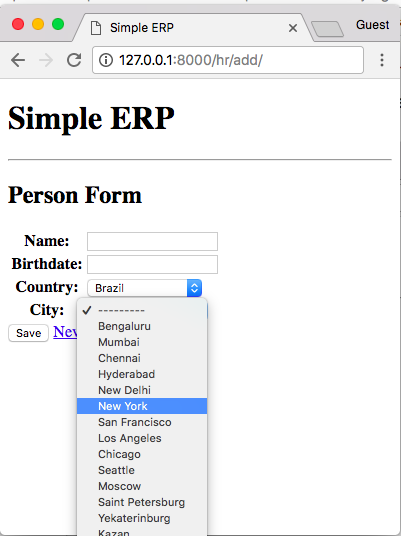
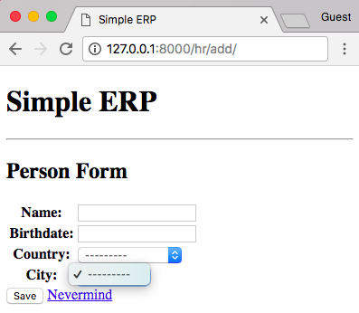
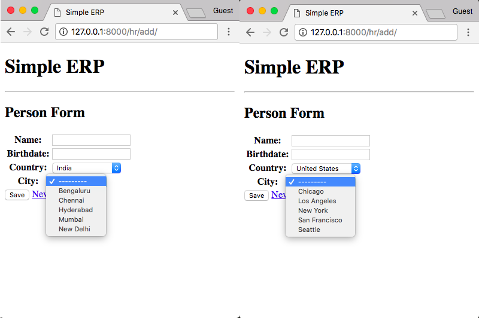
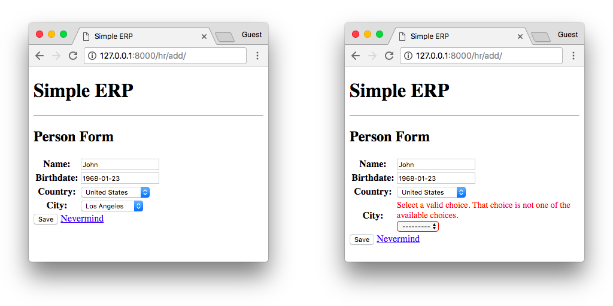

(Picture:
(Picture: Dependent or chained dropdown list is a special field that relies on a previously selected field so to display a list of filtered options. A common use case is on the selection of state/province and cities, where you first pick the state, and then based on the state, the application displays a list of cities located in the state.
Example Scenario
Take the application below as an example:
models.py
from django.db import models
class Country(models.Model):
name = models.CharField(max_length=30)
def __str__(self):
return self.name
class City(models.Model):
country = models.ForeignKey(Country, on_delete=models.CASCADE)
name = models.CharField(max_length=30)
def __str__(self):
return self.name
class Person(models.Model):
name = models.CharField(max_length=100)
birthdate = models.DateField(null=True, blank=True)
country = models.ForeignKey(Country, on_delete=models.SET_NULL, null=True)
city = models.ForeignKey(City, on_delete=models.SET_NULL, null=True)
def __str__(self):
return self.nameIn the application we are going to create a simple form processing to create and update person objects. The dependent
dropdown list will be used on the country and city fields of the person model.
urls.py
from django.urls import include, path
from . import views
urlpatterns = [
path('', views.PersonListView.as_view(), name='person_changelist'),
path('add/', views.PersonCreateView.as_view(), name='person_add'),
path('<int:pk>/', views.PersonUpdateView.as_view(), name='person_change'),
]Finally, the three basic views:
views.py
from django.views.generic import ListView, CreateView, UpdateView
from django.urls import reverse_lazy
from .models import Person
class PersonListView(ListView):
model = Person
context_object_name = 'people'
class PersonCreateView(CreateView):
model = Person
fields = ('name', 'birthdate', 'country', 'city')
success_url = reverse_lazy('person_changelist')
class PersonUpdateView(UpdateView):
model = Person
fields = ('name', 'birthdate', 'country', 'city')
success_url = reverse_lazy('person_changelist')The example is already working, except it may allow inconsistent data to be saved in the database. For example, someone could pick Brazil from the country dropdown and then New York from the city dropdown. Also, so far, that’s not what we want. We want the city dropdown to be filtered based on the country selection.

The HTML is just a simple form rendering:
{% extends 'base.html' %}
{% block content %}
<h2>Person Form</h2>
<form method="post" novalidate>
{% csrf_token %}
<table>
{{ form.as_table }}
</table>
<button type="submit">Save</button>
<a href="{% url 'person_changelist' %}">Nevermind</a>
</form>
{% endblock %}Dependent Dropdown Form
The best way to implement it is by creating a model form. This way we are going to have great flexibility to work on the features.
forms.py
from django import forms
from .models import Person, City
class PersonForm(forms.ModelForm):
class Meta:
model = Person
fields = ('name', 'birthdate', 'country', 'city')
def __init__(self, *args, **kwargs):
super().__init__(*args, **kwargs)
self.fields['city'].queryset = City.objects.none()The example above is a simple form definition with an important detail: right now we are overriding the default init method, and setting the queryset of the city field to an empty list of cities:

PS: Don’t forget to change the view definition to use our new form class instead:
views.py
class PersonCreateView(CreateView):
model = Person
form_class = PersonForm
success_url = reverse_lazy('person_changelist')
class PersonUpdateView(UpdateView):
model = Person
form_class = PersonForm
success_url = reverse_lazy('person_changelist')Now we need to create a view to return a list of cities for a given country. This view will be used via AJAX requests.
views.py
def load_cities(request):
country_id = request.GET.get('country')
cities = City.objects.filter(country_id=country_id).order_by('name')
return render(request, 'hr/city_dropdown_list_options.html', {'cities': cities})Simple function based view is great for this kind of implementation. Below, what our HTML template looks like:
templates/hr/city_dropdown_list_options.html
<option value="">---------</option>
{% for city in cities %}
<option value="{{ city.pk }}">{{ city.name }}</option>
{% endfor %}See what we are doing here? This template will be used to compose just this tiny piece of HTML. Then the challenge now is to load only this part without having to reload the entire HTML page.
Before we proceed, let’s create an URL route for this view:
urls.py
from django.urls import include, path
from . import views
urlpatterns = [
path('', views.PersonListView.as_view(), name='person_changelist'),
path('add/', views.PersonCreateView.as_view(), name='person_add'),
path('<int:pk>/', views.PersonUpdateView.as_view(), name='person_change'),
path('ajax/load-cities/', views.load_cities, name='ajax_load_cities'), # <-- this one here
]Now it’s time to create an AJAX request. In the example below I’m using jQuery, but you can use any JavaScript framework (or just plain JavaScript) to create the asynchronous request:
templates/person_form.html
{% extends 'base.html' %}
{% block content %}
<h2>Person Form</h2>
<form method="post" id="personForm" data-cities-url="{% url 'ajax_load_cities' %}" novalidate>
{% csrf_token %}
<table>
{{ form.as_table }}
</table>
<button type="submit">Save</button>
<a href="{% url 'person_changelist' %}">Nevermind</a>
</form>
<script src="https://code.jquery.com/jquery-3.3.1.min.js"></script>
<script>
$("#id_country").change(function () {
var url = $("#personForm").attr("data-cities-url"); // get the url of the `load_cities` view
var countryId = $(this).val(); // get the selected country ID from the HTML input
$.ajax({ // initialize an AJAX request
url: url, // set the url of the request (= localhost:8000/hr/ajax/load-cities/)
data: {
'country': countryId // add the country id to the GET parameters
},
success: function (data) { // `data` is the return of the `load_cities` view function
$("#id_city").html(data); // replace the contents of the city input with the data that came from the server
}
});
});
</script>
{% endblock %}First thing, I added an ID for the form (personForm) so we can access it more easily. After that, I added a data
attribute to the form data-cities-url. That’s a good strategy for cases where you are going to implement the
JavaScript in a separate file, so you can access the URL rendered by Django.
Then, after that we have a listener on the country dropdown, identified by id_country. This ID is automatically
generated by Django. Our listener is waiting for this value to change. When it changes, it will fire an AJAX request
to the server, passing the selected country ID to our view.
Upon success of the request, our tiny script will add the HTML rendered by the load_cities view inside the cities
dropdown list, which is identified by the HTML ID id_city.

Right now the front end is already good, but the back-end is not quite working as expected. If we submit the form as it is now, we are going to see the following error message:

That’s because of our empty list of cities in the form definition. I wanted to show you this error message, because it’s actually very useful. It will help us to keep the consistency of our form. Meaning the Django form check if the provided value exists in the queryset.
Below, the fix:
forms.py
from django import forms
from .models import Person, City
class PersonForm(forms.ModelForm):
class Meta:
model = Person
fields = ('name', 'birthdate', 'country', 'city')
def __init__(self, *args, **kwargs):
super().__init__(*args, **kwargs)
self.fields['city'].queryset = City.objects.none()
if 'country' in self.data:
try:
country_id = int(self.data.get('country'))
self.fields['city'].queryset = City.objects.filter(country_id=country_id).order_by('name')
except (ValueError, TypeError):
pass # invalid input from the client; ignore and fallback to empty City queryset
elif self.instance.pk:
self.fields['city'].queryset = self.instance.country.city_set.order_by('name')This form will provide a very nice behavior. If there is form POST data (data is not None), it will load the list of
cities using the country ID the form received. If it’s an invalid input, just discard it and the form will display a
nice error for the user. If there is no POST data but there is an instance in the form (meaning the form is being used t
o updated an existing person), use the list of cities from the selected country. If not, just return an empty list of
cities, as it’s a brand new form (self.fields['city'] was already set to an empty queryset, remember?).
Alternatively you could completely remove the country field from the form definition, as it is related to the city anyway. But I preferred to keep it there because there are cases where you need to save both values, and in the example above you can have an idea of how to implement it without having to interfere with the rendering process of the form (which is a great thing).
Conclusions
Best way to learn is by trying it yourself. Check the code on GitHub and try it locally. Modify this example, make it yours. If you have any questions, please leave in the comments below!
You can see this example live at dependent-dropdown-example.herokuapp.com;
For the source code, go to github.com/sibtc/dependent-dropdown-example/.
 How to Integrate Highcharts.js with Django
How to Integrate Highcharts.js with Django
 How to Create Infinite Scroll With Django
How to Create Infinite Scroll With Django
 How to Crop Images in a Django Application
How to Crop Images in a Django Application
 How to Extend Django User Model
How to Extend Django User Model
 How to Setup a SSL Certificate on Nginx for a Django Application
How to Setup a SSL Certificate on Nginx for a Django Application
 How to Deploy a Django Application to Digital Ocean
How to Deploy a Django Application to Digital Ocean